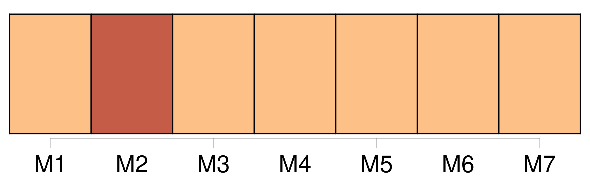
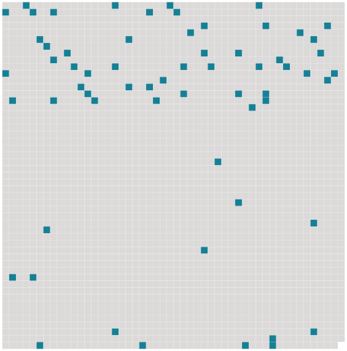

Longueur nb maillons : 63 mentions |
  |
MADAME BAPTISTE
[J'] avais à attendre deux heures dix minutes l'express de Paris.
[Je] me sentis las soudain comme après dix lieues à pieds ; puis [je] regardai autour de [moi] comme si [j'] allais découvrir sur les murs un moyen de tuer le temps ; puis [je] ressortis et m' [arrêtai] devant la porte de la gare, l'esprit travaillé par le désir d'inventer quelque chose à faire. [3 phrases]
[Je] n'apercevais aucun homme. Un morne découragement [m'] envahit. [2 phrases]
[Je] songeais déjà à l'interminable et inévitable séance dans le petit café du chemin de fer, devant un bock imbuvable et l'illisible journal du lieu, quand [j'] aperçus un convoi funèbre qui tournait une rue latérale pour s'engager dans celle où [je] me trouvais. La vue du corbillard fut un soulagement pour [moi] [1 phrases] Mais soudain [mon] attention redoubla. [3 phrases] [Je] pensai : « Voici un enterrement civil, » puis [je] réfléchis qu'une ville comme Loubain devait contenir au moins une centaine de libre-penseurs qui se seraient fait un devoir de manifester. [2 phrases] [Ma] curiosité désoeuvrée se jeta dans les hypothèses les plus compliquées ; mais, comme la voiture funèbre passait devant [moi] , une idée baroque [me] vint : c'était de suivre avec les huit messieurs.
[J'] avais là une heure au moins d'occupation, et [je] me mis en marche, d'un air triste, derrière les autres. [1 phrases] Ils se demandaient certainement si [j'] étais de la ville. Puis ils consultèrent les deux précédents, qui se mirent à leur tour à [me] dévisager. Cette attention investigatrice [me] gênait, et, pour y mettre fin, [je] m'approchai de [mes] voisins. Les ayant salués, [je] dis : « [Je] vous demande bien pardon, messieurs, si [j'] interromps votre conversation. Mais, apercevant un enterrement civil, [je] me suis empressé de le suivre sans connaître, d'ailleurs, le mort que vous accompagnez. [1 phrases] » [Je] fus surpris et [je] demandai : « Cependant c'est bien un enterrement civil, n'est -ce pas??
» [1 phrases] » [Je] poussai, cette fois, un « Ah! » de stupéfaction.
[Je] ne comprenais plus du tout. [Mon] obligeant voisin [me] confia, à voix basse : « Oh!! [2 phrases] C'est son mari que [vous] voyez là, le premier, celui qui pleure.
» Serait -il indiscret de vous demander de [me] conter cette histoire?? Si [je] vous importune, mettez que [je] n'ai rien dit.
» [Tenez] , restons un peu derrière. [2 phrases]
» [18 phrases]
[Songez] donc que cette jeune personne n'avait plus rien à apprendre, rien ; qu'elle n'avait plus droit à la symbolique fleur d'oranger ; qu'elle avait pénétré, presque avant de savoir lire, le redoutable mystère que les mères laissent à peine deviner, en tremblant, le soir seulement du mariage. [10 phrases]
Elle m'aurait beaucoup plu, [monsieur] , sans cette affaire. [10 phrases] « Il faut [vous] dire qu'elle adorait son mari comme un dieu. [Songez] qu'il lui avait rendu l'honneur, qu'il l'avait fait rentrer dans la loi commune, qu'il avait bravé, forcé l'opinion, affronté les outrages, accompli, en somme, un acte de courage que bien peu d'hommes accompliraient. [5 phrases]
« [Vous] savez que dans ces affaires -là il y a toujours des jalousies et des rivalités qui font perdre la mesure aux gens. [8 phrases] « Oh, [monsieur] , avez [-vous] jamais vu une femme devenir folle?? [21 phrases] « [Vous] saisissez maintenant pourquoi le clergé a refusé la porte de l'église. [2 phrases] Mais [vous] comprenez que le suicide s'ajoutant à l'autre histoire, les familles se sont abstenues ; et puis, il est bien difficile, ici, de suivre un enterrement sans prêtres. [1 phrases]
Et [j'] attendis, très ému, qu'on eût descendu la bière dans la fosse pour [m'] approcher du pauvre garçon qui sanglotait et lui serrer énergiquement la main. Il [me] regarda avec surprise à travers ses larmes, puis prononça : « Merci, [monsieur]
» Et [je] ne regrettai pas d'avoir suivi ce convoi. |
 |
La ressource peut être téléchargée sur la page Ortolang
Si vous avez des questions ou vous voyez des erreurs, merci d'envoyer un mail à silvia.federzoni89@gmail.com
Site développé par S. Federzoni (contact)